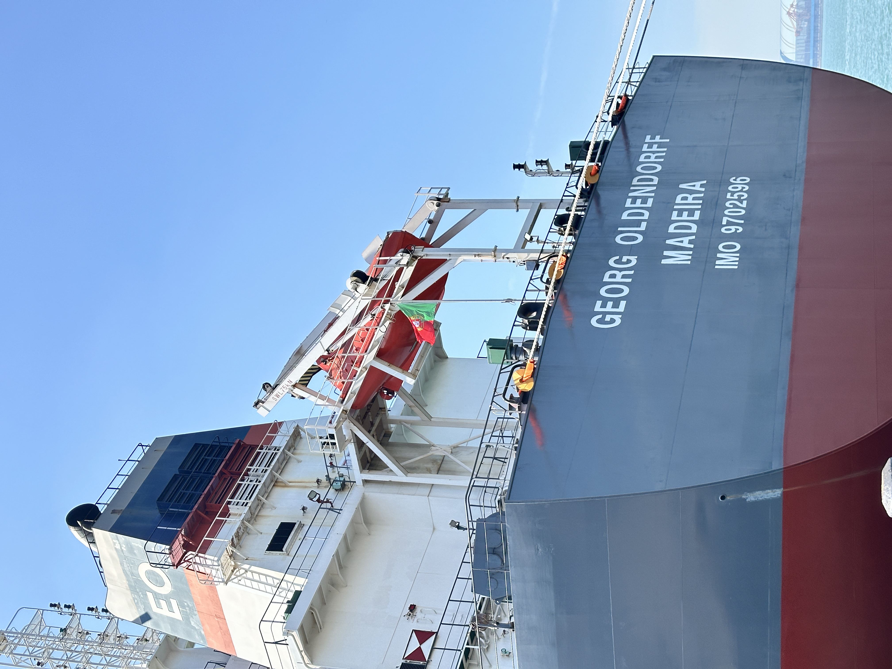

2026-08-20
Clinker Outage Risk Puts Supply Continuity Back in Focus
A recent kiln interruption in Pakistan is a reminder that a single equipment failure can affect clinker availability for weeks. For buyers of cementitious materials, continuity depends on qualified alternatives, realistic lead times and shipment-ready logistics.
熟料停产风险让供应连续性重回焦点
巴基斯坦近期发生的窑线中断提醒市场：一次关键设备故障，就可能影响数周的熟料供应。对胶凝材料采购方而言，连续供应取决于合格备选货源、现实交期与可发运物流。

Gharibwal Cement disclosed on 18 August that clinker production had stopped after damage to a kiln induced-draft fan. Repair work began and replacement equipment was procured, with shipment expected the following month. One plant event does not define the wider market, but it clearly illustrates how maintenance, spare-part lead time and restart schedules can quickly become procurement variables.
1. Production risk becomes a delivery risk
Clinker supply is built around continuous high-temperature operation. When a critical component fails, the effect can move beyond the plant gate: available tonnage, loading windows and customer allocation may all tighten. Buyers need to monitor not only headline capacity but also actual production status and cargo readiness.

2. Qualified alternatives should be prepared before disruption
Resilience is not a last-minute spot purchase. Alternative origins and materials must be checked against specification, performance requirements and import rules before they are needed. Where technically suitable, GBFS and GGBFS can form part of a broader lower-clinker material strategy, but qualification and consistent quality remain essential.
3. Logistics visibility protects the production plan
A workable contingency needs confirmed quantity, loading method, laycan, port capability, inspection arrangements and documents. Early visibility allows procurement teams to compare delivered options and avoid solving a production interruption with a poorly prepared shipment.

Takeaway: Temporary kiln outages are operational events with supply-chain consequences. The practical response is to qualify alternatives early, maintain realistic inventory visibility and keep cargo plans ready for execution. Industry signal: Gharibwal Cement disclosure reported by Profit on 18 August 2026.
Gharibwal Cement 于 8 月 18 日披露，其水泥窑引风机受损后，熟料生产已经停止。企业已启动维修并采购替换设备，相关货物预计次月发运。单一工厂事件不能代表整个市场，但它清楚说明：检修、备件交期与复产计划，会迅速转化为采购变量。
1. 生产风险会转化为交付风险
熟料供应依赖高温窑线连续运行。关键设备一旦故障，影响可能越过工厂边界，波及可供吨位、装货窗口与客户分配。采购方不仅要关注名义产能，也要了解实际生产状态和货盘准备度。
2. 合格备选方案应在中断前准备
供应韧性不是临时寻找现货。备选产地和材料必须提前核对规格、性能要求与进口规则。在技术条件适合时，GBFS 与 GGBFS 可成为更广泛低熟料材料策略的一部分，但技术认证与质量稳定性仍是前提。
3. 物流可视性保护生产计划
可执行的应急方案需要确认数量、装载方式、laycan、港口能力、检验安排和单证要求。越早获得这些信息，采购团队越能比较到岸方案，避免用准备不足的发运计划应对生产中断。
结论：临时窑线停产不仅是工厂运营事件，也会带来供应链后果。更实际的应对方式，是提前认证备选货源、保持真实库存可视性，并让货盘计划随时具备执行条件。行业信号来源：Profit 于 2026 年 8 月 18 日报道的 Gharibwal Cement 披露。
Planning resilient cementitious-material supply?
Share specification, quantity, destination, loading method and laycan.
正在规划更有韧性的胶凝材料供应？
请提供规格、数量、目的地、装载方式和 laycan。